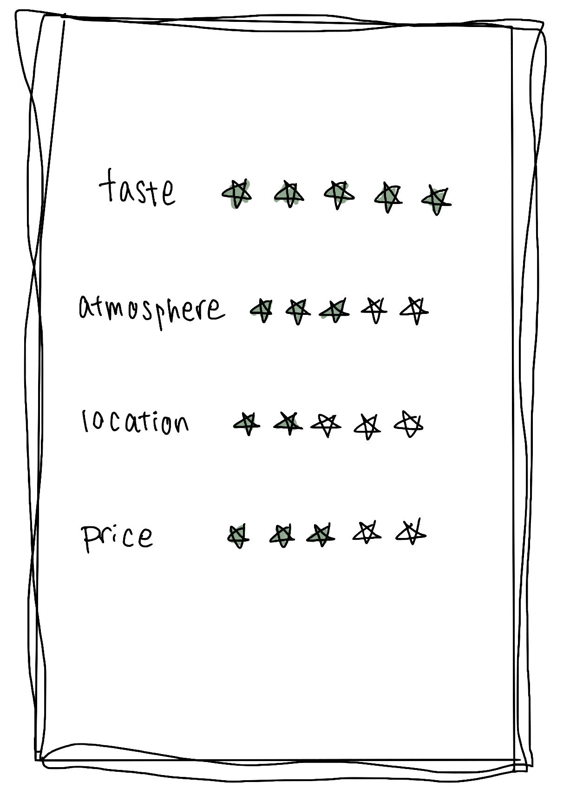

RAKU
このうどんは、まさに完璧な一杯でした。
まず、麺自体が驚くほど新鮮で、手打ちのものと思われるほどの質でした。
麺は程よい太さとツルツルとした食感で、スープとの相性が抜群でした。スープは深い味わいがあり、昆布や鰹節から抽出された出汁の風味が感じられ、さらにしっかりとした味付けがされていました。
これにより、一口ごとに贅沢な味わいが楽しめました。
具材も新鮮で豊富で、特にお気に入りは新鮮なたまごと、そのトロリとした黄身でした。
おろしポン酢やネギも絶妙なアクセントとして機能し、うどん全体の味を引き立てました。
店内の雰囲気は落ち着いており、清潔感があり、スタッフは親切でサービスも迅速でした。
価格はやや高めでしたが、提供される品質と味わいに見合うものであり、このクオリティのうどんを楽しむ価値が十分にありました。
総合的に、このうどんは最高のものであり、再訪したいと思える素晴らしいダイニングエクスペリエンスでした。


